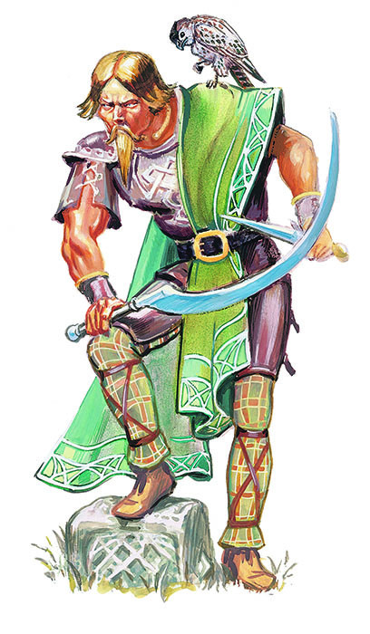

德鲁伊

德鲁伊（Druid）
|
所需属性值： |
灵知
12 |
|
|
魅力
15 |
|
首要属性： |
灵知，魅力 |
|
可选种族： |
人类，半精灵 |
历史上的德鲁伊们生活在罗马帝国时期西欧和英国的日耳曼部落中。他们是酋长的顾问，对部落有着极大的影响力。他们的核心理念就是相信大地是所有生命的母亲和根源。他们尊许多自然的事物――太阳、月亮和某些树――为神。但AD&D游戏中的德鲁伊只是简单地模仿这些历史人物。他们并不需要遵循历史上的德鲁伊教的行为和信仰。
德鲁伊是一个为特定神系而设计的祭司范例。他的力量和信仰与牧师不同。德鲁伊是自然的祭司和荒野的护卫者，无论森林，平原，还是丛林。
所需条件（Requirements）
一个德鲁伊必须是个人类或半精灵，他的灵知至少要有12而魅力必须达到15，这两项属性都是他的首要属性。
可用武器（Weapons Allowed）
不同于牧师，德鲁伊只能使用“天然“的护甲一一皮甲和木盾，包括那些被魔法强化过的。除此之外的任何护甲都不可使用。他只能使用木棒，镰刀，飞镖，矛，匕首，弯刀，投索和木棍作为武器。
可用法术（Spells Allowed）
德鲁伊没有牧师那样的可用法术范围，他们只能掌握以下领域的主要权能：共通，动物，元素、医疗，植物和气候，他们拥有预言领域的次要权能。德鲁伊能够使用所有牧师可用的魔法物品，除了那些被书写的（书藉与卷轴）和德鲁伊通常不能使用的武器和护甲。
神授力量（Granted Powers）
德鲁伊如同牧师般进行大多数豁免检定，但他在所有对抗火焰或电击的豁免检定上获得+2奖励。
所有的德鲁伊在他们原本所知的语言为还会说一种特殊的语言（如果采用熟练规则，这门语言将不耗用熟练槽）。这种德鲁伊的语言只能用来处理和自然有关的事情。德鲁伊们小心地守护着这门语言；这是他们用来彼此辨认的一种万无一失的方式。
当德鲁伊达到更高等级时会获得更多能力：
当他达到3级时，他能准确无误的鉴别植物、动物和纯净水。
当他达到3级时，他能以正常速度不留痕迹的穿过杂草丛生的区域（浓密的荆丛，纠结的藤蔓，荆棘，小片田地，诸如此类）。
他能学会林地生物的语言。这其中包括：半人马，树精，精灵，半羊人，侏儒，龙，巨人，蜥蜴人，蝎尾狮，尼克精，皮克精，小妖精和树人。 德鲁伊在达到3级时以及以后每次等级提升时获得一门语言（如果使用可选的熟练规则，德鲁伊自己决定是否要把熟练槽花在这些语言中的一个或多个上）。
当他达到7级时，他免疫于林地生物所施展的魅惑（Charm）法术（像是树精，尼克精等等）。
当他达到7级时，他得到变化能力，每日3次。这可以使他变化成爬虫，鸟类或哺乳动物，每种动物形态（爬虫，鸟类，哺乳动物）每天都只能变化1次，其体型可介于牛蛙或小鸟那么小到黑熊那么大之间。每当呈现为一个新形态时，德鲁伊都可回复10-60%（1d6x10%）的所受伤害（小数向下取整）。德鲁伊只能变成为普通（现实世界的）且正常大小的动物，而这么做会使他得到该动物的所有特征――它的移动速率和能力，它的防御等级，攻击次数，以及每次攻击的伤害。
因此，德鲁伊可以变成鹪鹩以飞越河流，并在对岸化身黑熊来攻击那里聚集的兽人，最后在更多的兽人赶来之前变成一条蛇并逃进灌木丛。
德鲁伊的衣着和每支手各持有的一件物品也会化为新身体的一部分；这些东西将在德鲁伊变回原形时重现。
德鲁伊不能斥退亡灵。
习性（Ethos）
作为自然的守护者，德鲁伊超脱于现世的纷繁之外。他们最关心的是自然那有序而必要的往复轮回――出生，成长，死亡与重生。德鲁伊倾向于把所有的事都看成轮回的一部分，因而善恶之争不过是时间的潮起潮落，只有在轮回与平衡受到干扰时才会关心，由于这样的观点，德鲁伊必须是中立阵营的。
德鲁伊肩负着保护荒野的责任――尤其是树木、野生动物、植物和谷物。他们也会对那些与自己有关联的随从与动物负责。德鲁伊认识到所有生物（包括人类）都需要食物，住所与保护。狩猎，耕种以及为建房而伐木，都是自然轮回中合理必要的部分，然而，德鲁伊不能容忍出于利益而对自然进行不必要的破坏或开采。德鲁伊喜用巧妙而隐秘的手段来向那些亵渎自然者复仇。众所周知，德鲁伊不仅记仇，也很有耐心。
�w寄生是德鲁伊的一种神圣象征以及某些法术（那些需要圣徽的）必要材料。要想完全发挥功效，必须在满月之时用为此而特制的金质或银质镰刀采集这些�w寄生，用其它手段收集的�w寄生会使造成伤害或是有生效范围的法术效果减半，还会在可进行豁免检定时给予目标的豁免检定+2奖励。
德鲁伊这个职业不能长期不变地生活在城堡，城市，或乡镇中。所有的德鲁伊都喜欢住在森林，并在那里搭建铺着草皮的、木制或石制的小房舍。
德鲁伊组织（Druid Organization）
德鲁伊有着世界级的结构。在高级阶段（12级和更高），每个等级都只有少数的德鲁伊能位列其内。
德鲁伊、高阶德鲁伊和大德鲁伊（Druids, Archdruids, and the Great
Druid）
在12级时，德鲁伊角色将获得“德鲁伊”的正式头衔（所有12级以下的德鲁伊角色的正式称呼都是“新进者”），在任何地域（这由海、洋和山脉划分；一个大陆可能包含了三或四个这样的地区）中，都只能有九个12级的德鲁伊。除非角色能够成为这九个德鲁伊之一，否则他将不能升到第12级。要么这个地域还没有九个德鲁伊，要么角色在魔法或肉搏对决中打败这九个德鲁伊之一，从而取代战败的德鲁伊之位。如果这场对决并不致死，则失败者的经验值降到刚好200,000点一一正好是11级。
每场对决的细节都由对决双方事先决定。这场对决可以是魔法的，也可以非魔法的，亦或者两者皆有。这可以是死斗，或者是直到一方不省人事，又或者直到损失一定的生命值，也可能是直到第一击命中，不过这种情况下的双方对自己的能力应该都很有信心。角色间所商定的条件是不受限制的，只要包含一定的技巧性与风险即可。
当角色成为一名12级的德鲁伊时，他将得到三个下属，他们的等级取决于角色在那九位德鲁伊中的地位。经验值最高的德鲁伊由三名9级新进者来服侍；经验值第二高的德鲁伊如三名8级的新进者来服侍；以此类推，直到经验值最少的德鲁伊由三名1级的新进者来服侍。
一个地域中最多有3个高阶德鲁伊（13级）。要成为一个高阶德鲁伊，一个12级德鲁伊必须击败在位的高阶德鲁伊之一或者正好填补空缺。3位高阶德鲁伊各有3名十级新进者为其效劳。而在全世界的所有高阶德鲁伊中，将有三人被选出侍奉德鲁伊宗师（见“德鲁伊宗师与德鲁伊圣师”一栏）。这三人在保留地位的同时，服务于德鲁伊宗师。
大德鲁伊（14级）在他的地区中是独一无二的。他也是从前任大德鲁伊那里赢得这一位置的。大德鲁伊由三名11级的新进者服待。
一位新大德鲁伊的晋升往往会在德鲁伊阶层中掀起轩然大波。大德鲁伊晋升所留下的空缺导致了德鲁伊们的激烈竞争，而德鲁伊的晋升也会使他们的阶层出现空缺。
德鲁伊宗师与德鲁伊圣师（The Grand Druid and Hierophant
Druids）
全世界地位最高的德鲁伊就是德鲁伊宗师（15级）了。不同于大德鲁伊（可以数人同时管理不同土地），全世界惟有一人能高踞此位。因此，任何时候都只能有一个15级的德鲁伊。
德鲁伊宗师在每个等级都掌握6个法术（而不是依照正常的法术进程）而且能额外施放最多六个法术等级的法术，既可以是单个法术也可以是多个加起来一共六级法术（比如说，一个6级法术，六个1级法术，三个2级法术之类的）。
德鲁伊宗师统辖着九名仅听命于他的德鲁伊。他们与任何地区的阶级都无牵连。任何等级的任意德鲁伊角色都可寻求为德鲁伊宗师效力。这9人当中有3个就是世上的高阶德鲁伊，为德鲁伊宗师担当信使与代理人。他们每一个人都得到额外的4个法术等级。剩下那些则是7到11级的普通德鲁伊，不过德鲁伊宗师可以委派任意等级的德鲁伊服务于他，并时常要求这些谦卑的从属作出贡献。
德鲁伊宗师的位置不是由战斗赢得的。相反，它由德鲁伊宗师从现任的大德鲁伊中选出。这个职位要求严格而且吃力不讨好，通常除了政客以外没有人会感兴趣。在累积了几十万点的经验值后，任何配得上这个名号的冒险者可能都已经准备好另寻别务了。
因此，德鲁伊宗师只要再得到500,000点经验就可达到16级。在达到16级后，德鲁伊宗师可以随时退位，只要他能找到一个合适的接班人（另一个有着3,000,000经验的德鲁伊）。
在退位时，前任德鲁伊宗师必须放弃那六个额外法术位等级以及所有经验值直到只剩1点经验值（他保留他的其他能力）。他现在是一个16级的德鲁伊圣师，并重新开始升级（使用表格23中的进程）。角色可以作为一个德鲁伊圣师而升到20级（几乎总是通过自我锻炼）。
15级以上的德鲁伊不会再获得任何新法术位（从此时开始忽略牧师法术进程表）。施法者等级将继续随经验而增长。此后获得的将是类法术能力，而不是法术。
16级：在16级时，德鲁伊圣师获得三种能力：
・对所有自然毒素免疫。自然毒素是指主动或被动摄入的动物或植物毒素，包括怪物的毒素，但不包括矿物的毒素和毒气。
・在他这种年纪极为充沛的精力。圣师不再受到老化导致的能力值调整的影响。
・随意改变外观的能力。改变外观需要一轮时间。他的身高和体重能够增减多达50%，表面年龄则可介于幼年到极老之间。而其身体和面部特征可与任何人类或类人生物相似。这种变形不是魔法的，所以无法被真知术以外的手段所探知。
17级：角色获得冬眠的生理能力。他的身体机能减缓到角色可能会被仔细的观察者当做已经死掉的地步；他同时也停止老化。角色在冬眠期间处于完全昏迷中。他将在到达预定时间（“我要冬眠20天”）或环境发生重大变化时醒来（气候转凉，有人用棍子打他，等等）。
一名17级的德鲁伊圣师还能随意进入土元素界。这一迁移需耗时一轮。该能力还能提供在该界域生存，四处行动，以及随意返回主物质界的能力。
18级：角色获得进入火元素界并在那里生存的能力。
19级：角色获得进入水元素界并在那里生存的能力。
20级：角色获得进入气元素界并在那里生存的能力。